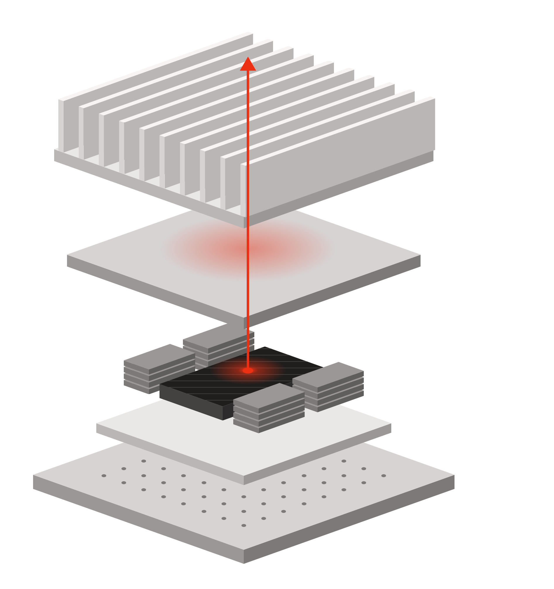

Thermal reliability in advanced packaging첨단 패키징의 열 신뢰성
We study thermal phenomena across scales, from standard cells to architecture, to inform thermal-aware design and reliability.표준 셀에서 시스템 구조에 이르는 열 현상을 분석해 열을 고려한 설계와 신뢰성 평가에 활용합니다.
국립한밭대학교 IDAS 연구실
물리적 이해에서 출발하는 AI 기반 설계
Physics-informed AI for advanced packaging, electronic cooling, and manufacturing at Hanbat National University.국립한밭대학교에서 물리적 이해를 바탕으로 AI를 첨단 패키징, 전자 냉각, 제조 공정에 적용합니다.
연구 살펴보기 / Explore our researchEngineering insight and artificial intelligence belong in the same design process.공학적 통찰과 AI를 한 설계 과정 안에서 함께 다룹니다.
IDAS Lab studies AI-driven engineering design grounded in a physical understanding of the problem.IDAS 연구실은 공학 문제의 물리적 원리를 이해하고 이를 바탕으로 AI 설계 방법을 연구합니다.
Our research spans the thermal reliability of advanced packaging, cooling for high-power electronic systems, and AI-guided fabrication of printed electronic structures.첨단 패키징의 열 신뢰성, 고출력 전자 시스템의 냉각, AI를 활용한 인쇄 전자 구조물 제조를 다룹니다.
Packaging is a stack of interacting materials and thermal paths. Our design work connects physical behavior to system-level decisions.패키징은 여러 소재와 열 전달 경로가 맞물리는 구조입니다. 각 요소의 물리적 거동을 시스템 설계 판단과 연결합니다.

Three connected questions: how heat moves through packages, how to remove it, and how to manufacture the structures reliably.패키지 안에서 열이 어떻게 이동하는지, 어떻게 식힐지, 필요한 구조를 어떻게 안정적으로 만들지 살핍니다.
We study thermal phenomena across scales, from standard cells to architecture, to inform thermal-aware design and reliability.표준 셀에서 시스템 구조에 이르는 열 현상을 분석해 열을 고려한 설계와 신뢰성 평가에 활용합니다.
We explore microchannel geometries for efficient cooling and more uniform temperatures across chiplets.마이크로채널 형상을 설계해 냉각 효율과 칩렛 간 온도 균일성을 살핍니다.
We investigate AI-guided printing processes for redistribution layers and polymer dielectrics, with uniformity and scalability in mind.재배선층과 고분자 절연층의 인쇄 공정을 연구하며, 제조 균일성과 대면적 확장 가능성을 검토합니다.
Selected papers from the IDAS publication record. Full bibliographic details are listed on the Publications page.IDAS 논문 중 일부를 소개합니다. 전체 목록과 서지 정보는 이 시안의 논문 페이지에 정리했습니다.
We welcome enquiries from students interested in AI-driven engineering design and advanced packaging research.AI 기반 공학 설계와 첨단 패키징 연구에 관심 있는 학생들의 문의를 기다립니다.
seongju@hanbat.ac.kr연구실 / 국립한밭대학교 N13동 604호